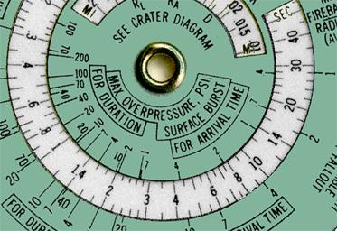
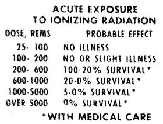
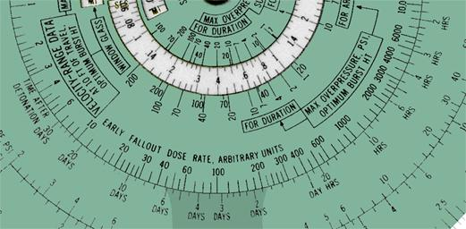
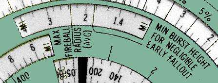

| This document reproduces the instructions included with the Nuclear Bomb Effects Computer which accompanied The Effects of Nuclear Weapons. The instructions were printed on a double sided sheet of paper which was folded and inserted in the pocket with the computer. This document reproduces the instructions verbatim, with illustrations added to show how values are read from the computer; the original instructions contained no illustrations. |
This computer is sold separately by the Superintendent of Documents for $1.00 and is not included in the price of the book, “The Effects of Nuclear Weapons”, which sells for $3.00
As a convenience to those interested in the effects of nuclear weapons, this circular computer was designed to make effects data easily available—some as functions of yield and range or of yield alone and others not directly related to yield or range. Taken from The Effects of Nuclear Weapons, Revised Edition, and subject to the limitations noted below, the information on the computer shows the many environmental variations associated with nuclear detonations that represent a potential hazard to man. In order to establish the significance of the effects parameters, tabular material are also presented on the computer which relate particular values of the effects parameters to various levels of biologic trauma and structural damage. See tables in large window (when rotated beyond the blast-effects scales) and on the back of the computer.
Although a number of factors—such as burst conditions, weather, terrain, and weapon design—introduce uncertainties in assessing weapons effects, the data presented offer the best available approximations for purposes of orientation and protective planning. The ease with which quick-reference information may be obtained necessitates simplicity of presentation, required by those new to the weapons field and desired for many purposes by fully informed personnel from technical to professional levels.
The blast parameters presented are those which would exist near the ground in open areas assuming a “near ideal” surface and a standard sea-level atmosphere. Maximum overpressure, maximum dynamic pressure, maximum wind, arrival time of the blast wave, and duration of the positive-pressure phase of the blast wave are detailed for two burst conditions, viz, surface burst and optimum burst height. The latter is defined as a burst at that height which maximizes an effect for a particular range and yield, e.g., for a yield of 1 MT, a burst height of 5,000 ft maximizes the overpressure at 1.2-mi range while a 10,000-ft height would be required at 5-mi range. Maximum winds for the optimum burst height were computed by using the maximum dynamic pressures for optimum burst height and the corresponding overpressures.
To read the blast parameters shown in the large window, it is necessary only to set the range of interest opposite the yield. For example, if a 1.6-mi range is placed opposite 100 KT, the maximum overpressure can be determined in the large window to be 3.4 psi for a surface burst and 7.0 psi for an optimum burst height. It is of interest to note that these overpressures are applicable to any number of yield-range combinations which can be read directly from the two scales, e.g., 1 MT at 3.4-mi range or 20 MT at 9.4 mi.

Duration and arrival time of the blast wave can be read in the appropriate window on the small disk. The only rule setting necessary for these readings involves moving the hairline on the tab to the yield of interest. To continue the example cited above, by setting the hairline on 100 KT, it is found (reading in the second window from the center) that for a surface burst the blast wave of 3.4-psi maximum overpressure arrives 5.0 sec after the detonation and has a duration of 1.7 sec.
When an ideal or classical blast wave strikes a flat surface head-on, i.e., at normal incidence, there is an instantaneous rise in overpressure to two or more times the incident value. Values of reflected overpressure vs. incident overpressure are plotted on the middle disk near the range scale. Suppose, for example, that a blast wave with a maximum overpressure of 30 psi strikes the side of a building head-on, by reading the reflected overpressure scale opposite 30-psi incident overpressure, it can be determined that 100-psi overpressure results from this reflection.
The translational velocities for man and window glass which appear in windows on the small disk were computed for the following conditions: (1) The velocities are those which would be attained after 10 ft of travel from the original position. (2) The range-velocity relationship shown apply to a burst of optimum height to maximize overpressure. (Velocities that would apply to a surface burst can be estimated by a method illustrated below.) (3) The velocities for man apply to a 165-lb man standing in an open area at the time of the arrival of the blast wave. (4) The velocities for window glass apply to fragments (0.1 to 10 gms) of double-strength glass (1/8 in. thick) from windows facing ground zero.
To find velocities of translation for man and window glass, set the tab hairline on the yield of interest and read in the appropriate windows velocities as a function of range. If the yield is 100 KT and the range 1.6 mi, the velocity for a man is 30 ft/sec and that for window glass, 320 ft/sec. These velocities apply to a burst at optimum height which would produce a maximum overpressure of 7.0 psi at this range. A surface burst, however, under the same conditions of yield and range would produce a maximum overpressure of only 3.4 psi. (See example cited above under Blast Parameters.) By using the overpressure, yield and range scales, it is found that 3.4-psi maximum overpressure occurs at 2.7 mi for an optimum height of burst. Reading the appropriate velocity scales at 2.7-mi range, it is found that man's velocity for a surface burst is 11 ft/sec and that for window glass is 140 ft/sec. It should be noted that these velocities apply to a 100-KT weapon at a range of 1.6 mi for a surface burst of at a range of 2.7 mi for an optimum burst height.
The thermal-radiation scales to be found in red on the back of the circular computer apply to air bursts and slant ranges where the visibility is 50 mi. Thermal data for distances less than 0.1 and for those greater than 25 mi were obtained by extrapolation. To estimate the thermal dose at a given location, set the range opposite yield on the front of the computer and place the tab hairline over this setting. Without moving the scales, turn the computer over and read the thermal scale at the intersection of the red spiral and the red hairline, e.g., if 100 KT and 1.6-mi slant range are set under the tab hairline, 34 cal/cm² is determined by interpolation on the thermal scale. Thermal radiation for a surface burst may also be obtained. In this case, set the short mark to the right of the tab hairline on the yield of interest (100 KT) and then set the range (1.6 mi) on the tab hairline. With this setting, a dose of 24 cal/cm² is determined in the same manner as before on the thermal scale.
Note the dashed lines on the thermal scale which indicate as a function of yield the thermal dose necessary for first- and second-degree burns to the bare skin. Thus, if the tab hairline is set on 1 KT, the thermal dose necessary for a second-degree burn is determined to be about 4 cal/cm². For a 20-MT yield, however, the dose required to produce this burn is about 10 cal/cm².
The rate of delivery of thermal radiation is indicated by a window on the small disk on the front of the computer. By setting the tab hairline on 100 KT, it can be determined, for example, that 50 percent of the thermal is emitted in 0.7 sec.

Initial nuclear radiation, gamma plus neutron, is indicated on the computer in a manner similar to that used for thermal radiation. The nuclear-radiation data were computed for air bursts, slant ranges, air-density ratio of 0.9, and a RBE of 1.0 for both gamma and neutron radiation. To illustrate an evaluation of initial nuclear radiation, set the tab hairline opposite 3.0-mi range and 20-MT yield and read 10 rems on the initial-nuclear-radiation scale at the intersection of the black spiral and black hairline.

The early-fallout-dose-rate scales appearing on the small and middle disks on the front of the computer are independent of all the other scales. If, after the fallout is complete, a dose rate is measured at a known time after detonation, then the dose rate at a later time can be estimated. Suppose that 80 r/hr were measured 2 hrs after a detonation at which time the fallout was complete. For convenience in reading the dose-rate scale at long periods of time, let 100 scale units represent 1 r/hr. Thus, 80 r/hr would correspond to 80×100=8,000 scale units. Set 8,000 opposite 2 hrs, and read 1200/100=12 r/hr at 10 hrs; 110/100=1.1 r/hr at 3 days; and 6.8/100=0.068 r/hr at 30 days. Note that this procedure is essentially the same as moving the decimal point of all dose-rate numbers on the computer two places to the left.
The crater dimensions defined on the computer only apply to surface bursts where the surface material is dry soil or rock. The three crater dimensions used are illustrated by a diagram on the computer. The dimension RA is the radius of the apparent crater, i.e., not including the rupture zone. RL is the radius of the crater lip and D is the depth of the crater measured from the undisturbed ground-level to the bottom of the crater.
Crater dimensions are evaluated by setting the tab hairline on the appropriate yield and reading the dimensions described above in the window nearest the center of the computer. Thus a 20-MT surface burst is found to produce a crater 0.16 mi deep (refer to dimension D) in soil or 0.12 mi deep in rock. The radius of the crater lip (RL) for a weapon of this yield is 0.65 mi in soil or 0.52 mi in rock.
The maximum fireball radius presented on the computer is an average between that for air and surface bursts. Thus, the fireball radius for a surface burst is 13 percent larger than that indicated and for an air burst, 13 percent smaller.
The production of early (or local) fallout is dependent on the relative size of the fireball radius and the height of burst. Thus, the empirically determined minimum height of burst required for negligible fallout is shown by a separate indicator on the same scale that defines the fireball radius.

To evaluate the parameters described above, it is necessary to set the tab hairline on the yield of interest and refer to the scale in the appropriate window on the small disc. For example, a 20-MT explosion produces a fireball with a maximum radius of 2.3 mi. The minimum height of burst for negligible early fallout, read in the same window, is 1.8 mi.
|
|